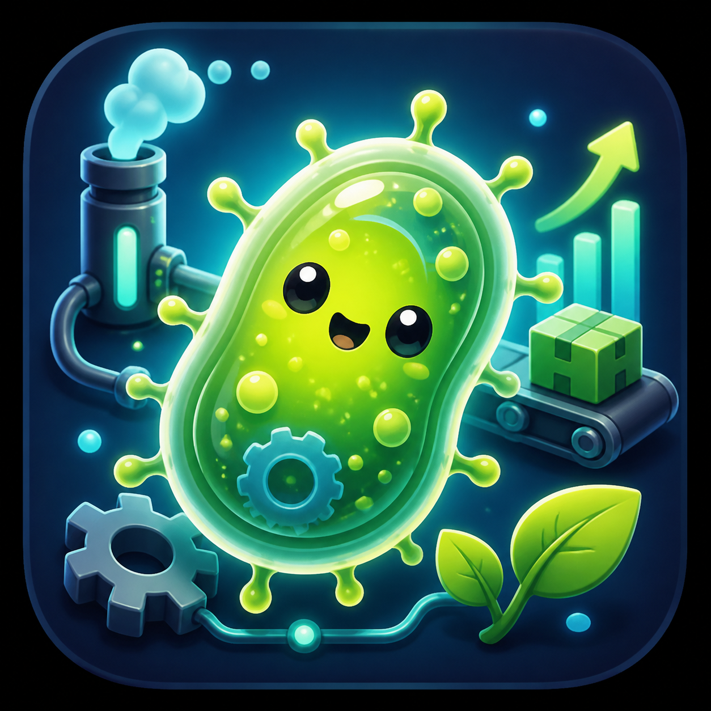

Homo Forensis
ON MY WAY

개요
| 항목 | 내용 |
|---|---|
| 장르 | 타이쿤 · 시뮬레이션 · SF |
| 플랫폼 | PC |
| 설명 | 플레이어는 생산, 공정, 판매 3가지 시스템을 운영하며 시설과 산업을 확장합니다. |
핵심 재미
| 재미 요소 | 설명 |
|---|---|
| 확장 | 작은 시설에서 시작해 농장, 공장, 상점으로 산업을 넓혀갑니다. |
| 연결 | 생산한 재료가 공정을 거쳐 상품이 되고, 상점에서 돈으로 바뀝니다. |
| 해금 | 새로운 시설, 방식, 시스템을 하나씩 열어가며 플레이 루트가 늘어납니다. |